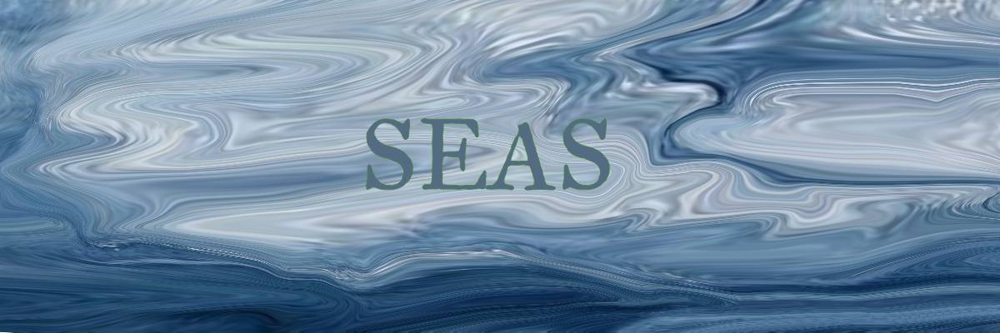
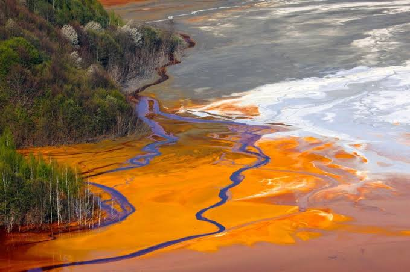
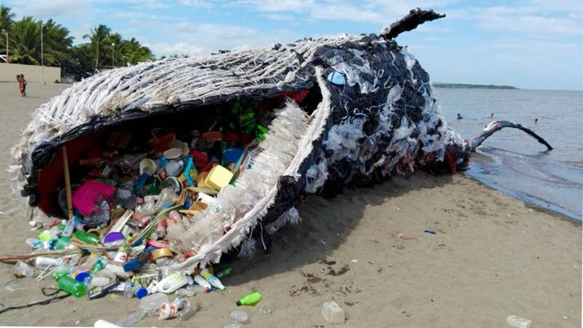

The sea is a beautiful vast body of water that surrounds all of us. But the sea is rapidly getting ruined by us unknowingly. The main problem is pollution, such as:
Agriculture being rained down and drained into the sea,
Plastic being thrown into the sea,
And toxic waste getting pumped into the waters.
These types of pollutions hurt our oceans the most, and also impacts us and the marine ecosystem. But what can you do to help prevent water pollution?

You must stop using one-time plastic, such as plastic bags and plastic bottles you get from supermarkets, and instead use reusable bottles and reusable bags. Start recycling any plastic you want to throw away.
Please exclude stock from the waterways as it defecates our water and damages breeding areas for the aquatic life. You should also try to use as least fertiliser as possible.
You should use less toxic products as much as possible, look for labels on any cleaning product to see if it might be the least toxic item there. You should only buy the amount you need, don't buy extra. Do not dump any toxic products down any type of drains or into any water as it will create more acidic oceans.
